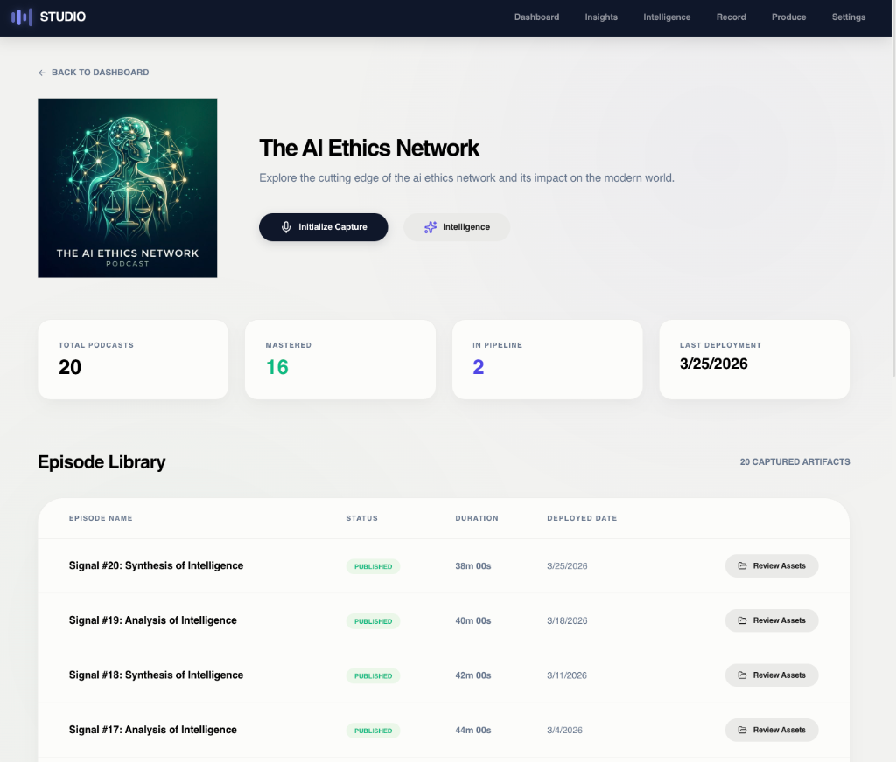

Product Design
User-centric digital products that solve complex problems with elegant interfaces and intuitive flows.

Podigee
This case study explores the intersection of user-centric design and technical feasibility within a high-concurrency hosting environment. We focused on streamlining the core user flows while maintaining a premium aesthetic that aligns with the brand's core values. Through rigorous prototyping and user testing, we identified key pain points and implemented intuitive solutions that drove a significant increase in engagement and long-term user retention across all digital platforms.

FNZ
This case study explores the intersection of user-centric design and technical feasibility within a high-concurrency hosting environment. We focused on streamlining the core user flows while maintaining a premium aesthetic that aligns with the brand's core values. Through rigorous prototyping and user testing, we identified key pain points and implemented intuitive solutions that drove a significant increase in engagement and long-term user retention across all digital platforms.

Authentec
This case study explores the intersection of user-centric design and technical feasibility within a high-concurrency hosting environment. We focused on streamlining the core user flows while maintaining a premium aesthetic that aligns with the brand's core values. Through rigorous prototyping and user testing, we identified key pain points and implemented intuitive solutions that drove a significant increase in engagement and long-term user retention across all digital platforms.
Jobspotting
This case study explores the intersection of user-centric design and technical feasibility within a high-concurrency hosting environment. We focused on streamlining the core user flows while maintaining a premium aesthetic that aligns with the brand's core values. Through rigorous prototyping and user testing, we identified key pain points and implemented intuitive solutions that drove a significant increase in engagement and long-term user retention across all digital platforms.